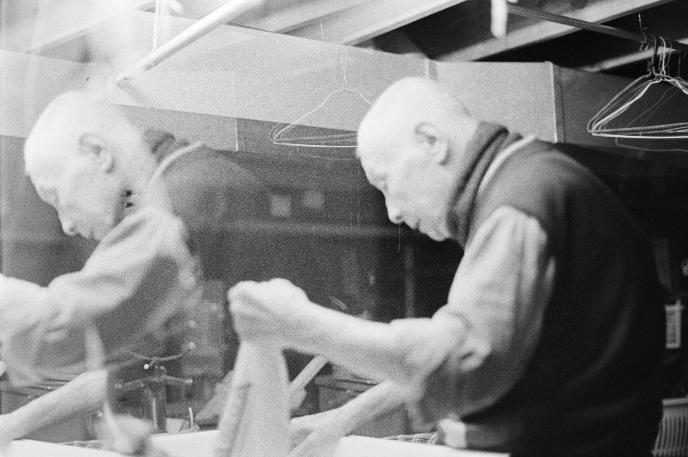

Transcript
Danny Luong
Author’s note: This is a transcript of a series of interviews with my mother, Dong My Van, done by myself to take a look into the diaspora of the Vietnam war. This story is a literary telling of the journey that my family took to get to Canada. These pieces have been edited and cut for clarity and brevity and the text is featured in my first self-published book titled Departing… Lastly, the English has been kept authentic to the way my mother spoke, and because some of it was in Vietnamese, I had to take liberties in translation.
Growing up in Vietnam was difficult because it felt like we were in an endless war.
I am not totally Vietnamese. My dad is Chinese, and my mom is mixed, so my last name was different from the other children. The children would make fun of my last name and told me:
"You don't belong here" "Go back to China" "Go back to France"
I can only remember as far as when I was 9. I don't remember anything younger than that. I just remember my mother carrying me and your uncle Thai. She carried us in a basket suspended on a stick, while carrying food and veggies for home.
My parents told me that the Americans were here and they were bombing us. My brothers and sisters told me the same. I didn’t understand why. I felt like there was never enough time to hide, and many times when we got to the shelters they were full and we were turned away and told to find another.
Sometimes, while the bombs fell, I would stay at home with my sister. I remember once she was cooking, and we heard the airplanes come. I said:
"Look, look! They're going to drop bombs now."
I remember looking at the jets, and she scolded me and told me to hide inside. I was young, and if she was looking at the planes I wanted to look too, so I stayed by her side. I remember the noises they would make, engines tearing through the skies.
Afterwards all you could hear was the explosion, and the ground would shake. After a couple of times, we got used to it. This is how it was.
At first you were scared, but you got used to it quickly. You saw people dying, but after being scared, you had to run. The fear seemed to be... Every day. You had no choice but to face it. We didn't know if we were going to die or not.
Over loudspeakers the government would announce once the bombing was over and we could return to our normal lives.
In 1968 I was maybe 2 or 3 years old and we had already seen multiple dead people. You would be walking and you could see limbs like legs and hands stuck in the trees. My brother was too young to notice, and I was too young to be afraid. There was always blood on the streets. It never really bothered me as a child because I never knew any of these people.
The shelters never had enough space, so we moved away from the city. The cities were also more likely to get bombed than the rural country side. So we moved in with our grandmother in the country.
It was safe there, but it was so far away from home. We no longer had to go to school, and I remember being happy about that.
It was a different story for my older siblings. Their friends died, and it affected them deeply.
I was taught from a young age that I was to love my country. Die for my country. Do anything I had to do for my country. That my country was the best. Ho Chi Minh gave everything to Vietnam and we were to live by his example.
Every morning while I was in school, I got up and put on my uniform — blue pants with a white shirt, and a red handkerchief tied around my neck. During row call we would sing songs for Vietnam.
We would sing songs all about Ho Chi Minh, he was like a king — a god to us.
They told us that the soldiers in Vietnam fought so hard for us to live in the north. How they fought so hard for the peace and independence we had. They told us that the soldiers who died for us were the bravest.
I really loved our soldiers. They told me I couldn't become a soldier because I am a woman, but I could cook for the soldiers. Be in the field and cook, I could be a doctor, or a nurse to help the soldiers. It's what I wanted to be as well. It was in my mind that I loved my country, I would do anything for the country. Other kids made fun of my name, but in my blood I was born and raised in Vietnam.
We were so happy when the war was over in 1975. Finally no more war — so happy. My father was a bus driver — so he made one trip to Saigon every day. We were so poor in the north, we had nothing. He was one of the first people allowed entry to Saigon after the victory. He was able to visit his brothers, who were both soldiers.
Dad said soon he'd take me to Saigon too.
In North Vietnam you had to have vouchers to buy anything. If you didn't have any vouchers, you couldn't get anything, not even food. After awhile, they stopped giving my family any vouchers. They took all our vouchers, took my dad's job all because he was from Chinese descent.
I think my dad wasn't one of the first ones who was evicted. He had been at his post as a bus driver for a long time, and he didn't believe they would fire him. He didn't think it was going to happen to him.
They told him: "You don't belong here."
“You're fired — you no longer work here.”
After 6 months, finally, my father told me we were leaving.
They had a train for the Chinese to go back to China. My brothers and mother left first by train, the train stopped at the border at Mong Cai. I missed my brothers, I cried everyday and I didn't go to school, I couldn't do anything because they no longer accepted me into the society because I was a 'Chinese' person. I had never felt so alone in a place I called home.
We didn't take the train, my father’s best friends were drivers. One of them volunteered to take us on his bus to the border. I sat there in the bus for a long time, watching Vietnam pass through the windows as I left my home.
I remember I was so happy in China.
They treated us very well. They had a place for the refugees, they gave us food, they gave us clothes. Breakfast lunch and dinner, they'd call us to a cafeteria and we'd eat. As a child there wasn't much for me to do, so I was able to play all day. We went to movies and didn't have to pay anything. They knew you were new there, but I didn't speak any Chinese. I didn't speak the language but we were with all of the other Vietnamese exiles so I didn't have to. We were able to go to the zoo, and it was very beautiful, especially compared to where I was coming from.
In Vietnam I was hungry everyday. In China I had everything — I ate foods I had never even heard of in Vietnam. They gave us meat, seafood, anything you'd like to eat, they would give you it all.
We stayed for four months.
The officials decided that we would be going into a labour camp. We could still live together, but we had to work. I didn't have to work because I was 11 — I went to school. In school in China, I didn't understand anything.
My brothers, sister and my parents had to go to work. They had to plant. They had to grow food, and farm the countryside. We were from the city. We didn't know how to do that. My family was exhausted every day they got home. My father didn't know how we were going to survive like this.
It was around this time, my eldest brother, Nam, noticed people were leaving the camp. They told him they were going to find freedom. The Vietnamese exiles told us there was freedom, we didn't have to live with communism.
My eldest brother, Nam, told us that if we stayed here, we would die.
He went off to Guangzhou in search of freedom.
We were told: "Hong Kong is freedom.”
Nam came back and told us that leaving was possible, it had to be done quietly and it was also very expensive. Many people had also gotten ripped off, so there were a lot of homeless people who had given away everything and gotten nothing in return. These people could not go home.
We sold everything we brought with us from Vietnam. Two motorbikes, electronics, and anything else we could fit on our backs. We were lucky no one stole them from us. Nam told us he had made friends who would give us safe passage and harbour us until that time came.
We made 900 Yuan, which in the 70's was a lot of money. This money was everything we had for passage to Hong Kong.
We didn't know who we could trust, anything could have happened to us.
We left the camps early before they started taking our names and information down. No one missed us. We told the authorities we were visiting our relatives in Guangzhou. We left behind 4 cousins. My father still feels deep regret and shame about this. That family eventually landed in England.
We made our way to Guangzhou, and there we stayed with Nam’s friends.
Here we were Chinese, but we were Vietnamese. We were not Chinese citizens. We were non-status. We were nobodies.
We needed to find boat drivers that were of Vietnamese descent, as the Chinese weren't allowed to leave China under threat of death.
One night, we were woken up by my parents, they kicked us and told us to wake. They told us to be quiet, and to shut our mouths. I think it was two in the morning. It was still dark.
We walked down to the docks, and my father told me to get into a boat. I walked up to it and froze, I was leaving again, I had never taken a boat and it was only attached to the dock via rope. It swayed in the water, in the darkness and I was scared to step on. My father told me:
"Jump!"
I jumped into the hole, it was dark, and my brother Thai jumped in afterwards and fell onto me. I yelped, and my father scolded me. He said "Be quiet, say nothing."
We all sat there quietly inside of the boat, and slowly the boat moved. I knew it was moving and that was all.
Morning came, and my father told me: "We're safe"
On the boat, I had fun again with my brother. We ran around the boat doing laps and chasing each other, pinching each other and asking questions to our father about different mechanisms on the boat.
My sister, Nhit, did not take to the boat well and was severely sea sick. We thought she was going to die, she didn't even get up, she just drank a little bit and laid back down. All of my older brothers had to help on the boat, but Thai and I were still children — so we played and ate.
Grandpa was always watching day and night.
Lots of people got killed by pirates, they would kill the men and rape the women. We were one of the lucky ones. Every time we stopped to get supplies like fresh water and food, the Chinese were so friendly and happy to see us.
We were on the boat for 10 days. Some people were out there for months
Our boat was one of the smallest on arrival to Hong Kong. When we came ashore the police brought us into a room and sprayed us down. There was already a camp set up there to receive Vietnamese refugees in Kai Tak airport because the airport was right by the ocean.
We stayed in a little room. There was constant traffic. They washed our hair and made sure we were clean. They changed our clothes and gave us shots before we could enter the camp. They had doctors and nurses on hand to get you into the camp.
I was 14 when we arrived in Hong Kong, I remember because we arrived on Chinese New Year. The government gave us one square room. 12 x 12. Our family counted seven, and we had two cousins as well as one stranger. 10 people in one room.
Other refugees told me that the locals protested us being there. They told us that there was already no room in Hong Kong, and that we couldn’t stay here. This really hurt my feelings, I had thought we were taking a trip to go to a new home. Hong Kong was so beautiful. I had never seen buildings so tall!
We were assigned a number. Our number was 1977. This was a lucky number in Chinese, it meant 'freedom soon.’ We weren't let out of the camp until August. By then it had been 7 months.
I just remember being so cramped when I slept, I couldn't even move in our room.
Fights between the north and south refugees from Vietnam at the camp happened often, and tensions had been rising for awhile. The refugees from the south had a stronger English and Chinese literacy rate, so they were able to benefit and negotiate for better things over their northern counterparts including us. The north and the south really hated each other, and it was very scary. Families with teenage boys and men would get into fights with each other.
All of my brothers had to work, everyone was given food equally. It didn't matter how old you were or anything like that. Because me and my brother Thai were the youngest, my mother took food from our bowls and gave them to our older brothers. We were always upset because we were so hungry. My brothers also volunteered to work around the camp so we were given more food from time to time. Nam and Hong would consistently get into arguments and altercations with Southern Vietnamese refugees. I would see them come home with cuts, scrapes and bruises at night.
We were kicked out by the northern Vietnamese government as well, but because our dialect of Vietnamese was different it didn’t matter. The Southern refugees needed a way to vent their frustrations on the closest things they could. Often that was us.
Because my father spoke French, we were able to get on the second flight from Hong Kong to Canada. We had about two days in Hong Kong before we flew to Canada, and during those two days we were granted the freedom to go wherever we wanted.
The first day I was allowed to leave the camp, I was able to leave with a little bit of money from my parents, me and Thai went across the street to buy some ice cream. We just started to eat, and I dropped it. My brother and I cried because we didn't have any more money to buy another scoop. We were so happy, we both just looked at the ice cream on the floor should we pick it up?
The floor was too dirty.
The government of Canada sponsored us and paid for our flight to Canada. After six months in the camp we were finally leaving. We found out that some of our family had been located in another camp in Hong Kong.
There, I remember seeing my great grandmother for the last time, I gave her a hug and we cried together and I flew the next day.
Being on the plane was like being in heaven for me. It wasn’t for Nhit though.
My sister cried the whole flight to Canada. She lamented: "Why are we moving to Canada how are we going to live like that? We're going to freeze to death. She would eventually leave us and move to sunny California in a marriage to a Southern Vietnamese man arranged by my father.
We had our own seats. We were nervous and scared, and all of our emotions were running high, the plane was filled with refugees. We were still not used to seeing such large buildings like airports. Everything was so beautiful compared to Vietnam where we had nothing. Everything was new. I was dumbfounded. There was so much space everywhere in Canada.
We landed in Edmonton, it was so beautiful, but we had no idea what anyone was saying to us. This is why our last name was spelled wrong — our father didn't know how to spell it correctly in English. There wasn't many people there to help translate, and he wasn't allowed to use any accents in the letters for his last name, so we ended up with the Chinese spelling of 'Ong' which is 'Dong'.
In Edmonton we took a bus to a compound where we were allowed to stay with all of the other refugees. People came and talked to us, and gave us clothes. I had nothing with me other than the shirt I was wearing and my shoes.
People with the Canadian government came to take pictures of us for our ID's and translators were also made available. The translators asked us:
“Why are you going to Quebec?”
My father explained he could speak French so he believed that going there would be best.
(Grandma washing hair in sink)
I didn't know how to turn on a shower. It wasn't like it was in Vietnam, all I had was a bucket to wash myself. I almost burned myself on the hot water here because I didn't know the difference between ‘H’ and ‘C’. Nobody helped us shower because they assumed we knew how to use a toilet and a shower.
I was too happy. So happy that I was wearing nice clothes, even if they were used. It was nicer than anything I ever had, I had never eaten anything like this, I had never used a fork. Everything was new. You could eat anything, I had so much ice cream. We loved Canadian food.
All of our old clothes were garbage. There were tons of different clothes, I could pick anything I liked, anything that fit. I felt so impressed to be in Canada, there was a saying in Vietnamese — to become western. I felt like I was becoming a new person. The clothes were so beautiful, there were street lights at night that took my breath away.
They told us that Quebec would be very difficult on his children to grow up in. French was a difficult language to learn, and there was little to no Vietnamese population there.
They said we should stay here, and my father asked how can we stay here? Edmonton was no longer accepting any more refugees because it was full.
They told us we could go to Calgary.
“What's a Calgary?”
A city about three hours south, they could take us there via bus and we could stay there. My father said why not? He didn't want to have us to travel any further if we could finally just settle somewhere.
We were told it was cold here, but it wasn't as cold as the pictures they showed us in Hong Kong. The pictures we saw of Canada in Hong Kong were of Inuit in freezing conditions living in igloos.
When we arrived in Calgary we were placed in a hotel in downtown Calgary called the York Hotel on 7th avenue. I think it's gone now, I remember I had never seen a hotel before, let alone stayed in one. There was an elevator and escalator as well, both things we had never used before. My father and mother were frightened by the moving stairs. I thought it was magic.
We were given more clothes, and we ate very well there. People were very kind and they helped us each step of the way whenever we encountered something foreign to us.
The city gave us a half duplex on 3463 33rd st SE. That was our first home in Calgary from the government. They told us, when we found jobs we would pay them $99 a month for the rent. For now we didn't have to pay anything until we got a job. A home in Dover.
We were told to go to church and there we could get donations such as sofas, chairs, telephones, beds, sheets and TV's. Slowly we built a home.
When the phone rang at home, All I knew was “Hi, Hello, how are you?” Everyone was too scared to pick it up. Nobody was going to phone us anyway, but they hooked up a phone for us anyway. All the refugees and friends we had made along the way parted, and because we didn't know how to get around we couldn't visit each other.
Back then on the weekends the bus didn't run, so we walked to the grocery store. I remember pushing the cart all the way back to our house, I remember it was so cold. as we pushed our cart of $20 groceries back home. My sister and I thought again we were going to die from the cold.
As soon as we got home we put our feet on the radiator and held each other until we could feel our toes again.
It was difficult for us, we came from such hot places. I had never been that cold in my life. People dropped in occasionally because they knew we needed help. Men from South Vietnam helped us translate, they wanted to marry my older sister because there were no Vietnamese women here in Calgary. Many of the first refugees from Vietnam were men as they were deserters from the war. We were one of the first families that were able to get here. Most of the men were soldiers from the south, so they were evacuated when the Southern government was toppled.
My father didn't want his daughter to marry any of these men because he was scared that they still had wives back home in Vietnam. If that was the case, later it would cause too many problems, so nobody was getting married. But still they came and helped a lot, they helped my father learn to drive, get a motor vehicle and navigate North American daily life.
When winter came in earnest, people told us if we spoke while outside our teeth would fall out and our tongues would freeze and saliva would turn to ice. We didn't know they were just teasing us. We found this out just by gradually doing more and more things outside and going further and exploring our new home. We walked and biked everywhere. We were outside every day.
Three other Vietnamese families ended up moving close by us, and we started making new friends. I still see them sometimes.
Finally I started to go to school. I was in middle school and we started making more and more friends, and with our friends, we started really learning English. I was in Junior High. I never could do too much in class, and barely understood anything — but through making friends and gradually learning to speak I was learning bits and pieces. Math was fine, but I always struggled with English. Essays filled me with dread. I passed anyway.
I graduated middle school, then I went to Forest Lawn High School, and that was difficult in its own way. I was bullied because of my name. The kids would laugh and say:
"My Van, My Van is in the parking lot!"
So I tried to shorten my name to just Van (pronounced 'vun' in Vietnamese). That didn't help either.
"Van?! Your name is VAN? Your name is a Van?"
They always made fun of my name, and that made me so sad, I would cry about it at home. Around this time, I also knew what a van was, and it hurt being called that.
Seeing this behaviour torment me and my friend Son, one of my teachers asked me if I wanted a new name. She asked if I liked the name Christine. I smiled and nodded. Like so many times already, I was born again, I felt like someone new. Like I was becoming western.
In Vietnamese my name, My Van, meant cloud. A beautiful cloud. Son’s name meant a strong mountain, fitting for a man.
I still call myself Christine to this day. Son, we changed to Sonny. We were both happy afterwards. My brothers Hong, Nam and Thai were unaffected by this, their names meant nothing in English. I had no problems after that day.
I remember when I arrived in Canada I didn't know my birthday. We didn't celebrate birthdays in Vietnam. So when I came to Canada and went to school, my teachers, who had all of my information including my date of birth told me: "It's your birthday today!"
We didn't know what that meant, but slowly we learned that it was special here. No one celebrated it in Vietnam, no one cared. We started celebrating birthdays in Canada.
Everyone always asked my father to 'save their daughter' for them or their sons. I never wanted that. I wanted to be free, if I fell in love then I fell in love. My brothers and sisters were okay with being arranged, but I wanted to be free.